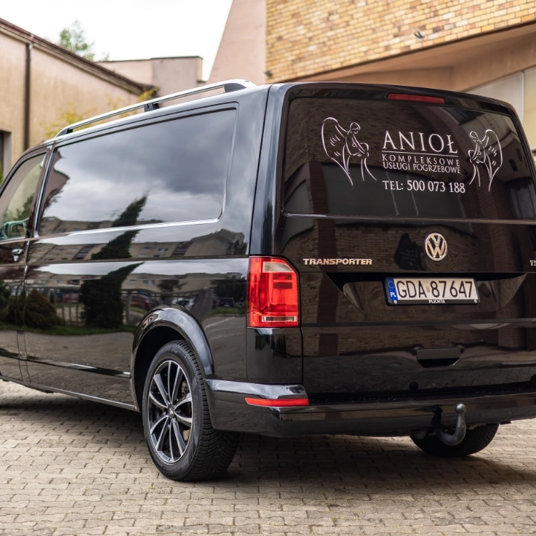
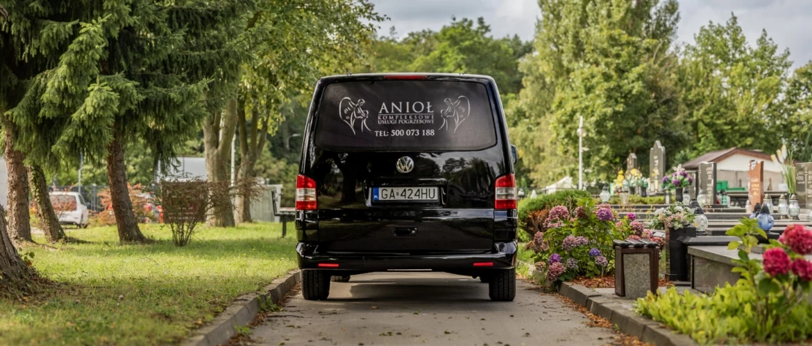
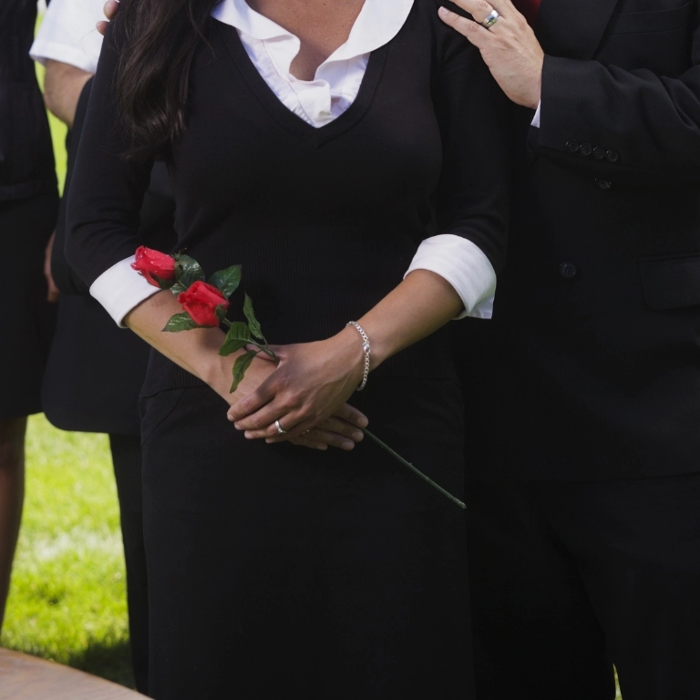

Całodobowy przewóz zmarłych
Organizujemy przewóz osoby zmarłej do chłodni z domu, szpitala, hospicjum lub innego miejsca. Pojazdy z chłodnią na transport także na dużą odległość.
Czytaj więcejZakład pogrzebowy Anioł świadczy kompleksowe usługi pogrzebowe w Gdyni, Gdańsku, Sopocie i okolicy. Zadbamy o wszystkie sprawy związane z organizacją pochówku — abyście mogli Państwo w spokoju pożegnać bliską osobę.

Profesjonalna pomoc w trudnych chwilach — zajmiemy się każdym szczegółem ostatniego pożegnania.
Zakład pogrzebowy Anioł w Gdyni (Karwiny, Wiczlino) oferuje kompleksowe usługi pogrzebowe. Zajmiemy się każdym szczegółem, aby mogli Państwo w spokoju i zadumie przygotować się do ostatniego pożegnania bliskiej osoby, nie musząc troszczyć się o kwestie związane z przygotowaniem ceremonii i właściwym pochówkiem.
Do naszego zakładu zgłaszają się Klienci, którzy pogrążeni w smutku i żalu pragną powierzyć organizację pochówku profesjonalnej firmie. Mamy wieloletnie doświadczenie w świadczeniu usług pogrzebowych. Naszym priorytetem jest zapewnienie kompleksowego wsparcia w zaplanowaniu uroczystości.
Dowiedz się więcej o nasDostosowujemy nasze usługi do Państwa potrzeb i podejmujemy się organizacji pochówku w różnych obrządkach religijnych — tradycyjnego oraz z kremacją.

Organizujemy przewóz osoby zmarłej do chłodni z domu, szpitala, hospicjum lub innego miejsca. Pojazdy z chłodnią na transport także na dużą odległość.
Czytaj więcejWyręczymy Państwa w wizycie w Urzędzie Stanu Cywilnego, złożeniu dokumentów w zarządzie cmentarza i pozostałych formalnościach.
Czytaj więcejRealizujemy pogrzeb w ramach zwrotu zasiłku pogrzebowego z ZUS — nie muszą Państwo ponosić kosztów z góry.
Czytaj więcejPochówki tradycyjne, z kremacją oraz ekshumacje. Zapewniamy dekoracje, oprawę muzyczną, sztuczną trawę, baldachim i windę.
Czytaj więcejOdpowiednia muzyka i nagłośnienie, sztuczna trawa, baldachim, winda pogrzebowa oraz krzesełka dla najbliższych.
Czytaj więcej
Po uzgodnieniu szczegółów organizujemy poczęstunek dla bliskich — wynajmujemy lokal gastronomiczny lub zamawiamy catering.
Czytaj więcejPomożemy Państwu we wszystkich sprawach związanych z zaplanowaniem uroczystej i godnej ceremonii pogrzebowej.
Odpowiednie nagłośnienie i muzyka — jesteśmy otwarci na propozycje od Klienta.
Aby teren wokół miejsca pochówku wyglądał estetycznie i godnie.
Sprawny mechanizm odpowiadający za godne opuszczanie trumny.
Szczególnie sprawdzi się podczas deszczowej lub śnieżnej pogody.
Dla najbliższych zmarłego i osób starszych podczas ceremonii.
Jeśli sobie Państwo tego zażyczą, za dodatkową opłatą możemy także wynająć fotografa funeralnego lub obsługę filmową, która zarejestruje całą uroczystość.
Zdajemy sobie sprawę, że śmierć bliskiej osoby jest bolesnym doświadczeniem. Żałoba to okres, podczas którego trudno skupić myśli na doczesnych sprawach. Z tego powodu wychodzimy naprzeciw Państwa potrzebom i oferujemy wsparcie w tych trudnych chwilach. Przygotowaliśmy poradnik, który przedstawia, jak zorganizować pogrzeb krok po kroku.
Głównym priorytetem naszej firmy pogrzebowej jest zapewnienie Państwu fachowej pomocy przy organizacji pogrzebu w Gdyni i Gdańsku. Wiemy także, że każdy ma swoje indywidualne potrzeby oraz oczekiwania wobec tego, jak będzie wyglądała ceremonia pogrzebowa. Organizujemy zarówno pogrzeby tradycyjne, jak i połączone z kremacją zwłok. Zapewniamy szeroki wybór eleganckich trumien i urn.
Siedziba naszego zakładu pogrzebowego mieści się w Gdyni, ale świadczymy usługi pogrzebowe również na terenie Gdańska, Sopotu oraz okolicznych miejscowości. Wśród oferowanych przez nas usług można wymienić:
Decydując się na skorzystanie z naszych usług, mogą Państwo liczyć na pełen profesjonalizm. W naszej firmie wymagamy od pracowników empatii, współczucia i profesjonalizmu. Naszą obecność ograniczamy do niezbędnego minimum, aby mogli Państwo pożegnać bliską osobę w prywatnym gronie.
Profesjonalna i pełna empatii obsługa w najtrudniejszym momencie. Zajęli się wszystkim — od formalności po piękną oprawę ceremonii.
Dyskrecja, spokój i ogromne wsparcie. Wszystko dopięte na ostatni guzik, mogliśmy w skupieniu pożegnać Tatę.
Dostępni całą dobę, bardzo pomocni i rzetelni. Z całego serca polecam ten zakład pogrzebowy.
Przykładowe opinie — sekcja gotowa do podłączenia opinii Google na żywo.

„Pomożemy Państwu pożegnać bliską osobę z należnym jej szacunkiem."Anioł — Kompleksowe usługi pogrzebowe
Jeśli mają Państwo jakiekolwiek pytania, prosimy o telefon lub kontakt mailowy — udzielimy wyczerpujących wyjaśnień i niezwłocznie przystąpimy do działania.